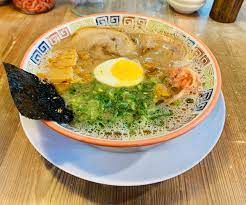
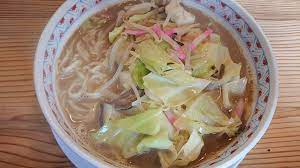
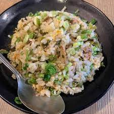
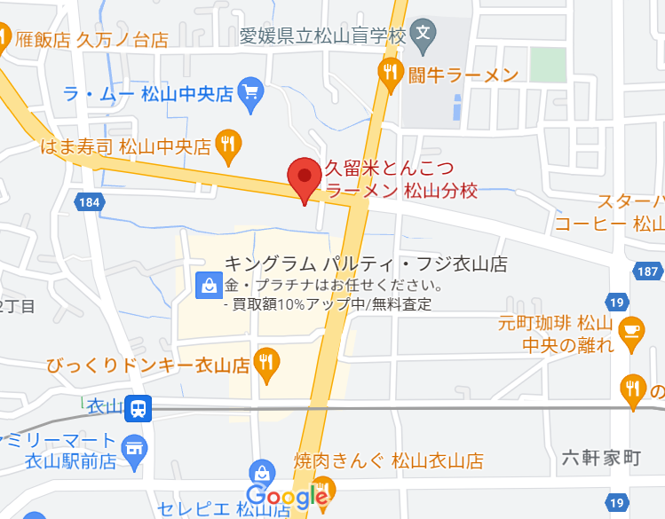

松山分校について
ホーム
メニュー
大砲ラーメンサイト
採用情報
こんにちは。衣山にある松山分校ラーメンでアルバイトしている濱田です！皆さんはラーメンはお好きですか？
私はもちろん好きです！ラーメン屋でアルバイトを始めたのもまかないが食べれるからです！
このサイトでは、バイト先である松山分校について紹介をしたいと思います！
大砲ラーメンとは…
大砲ラーメンは昭和28年に一軒のラーメン屋台から始まりました。ここのラーメンは「呼び戻しスープ」技法を使っています。呼び戻しとは、スープを使い切らずに毎日つぎ足し、他店では真似ができないスープの深みを作る技法のことです。この大砲ラーメンの看板を掲げていいのは、何年も修業を積んだ職人だけだといわれています。ここ、松山分校のスープも本家の大砲ラーメンから移植していただいた半世紀もののスープを約20年間使用し続けています。こだわっているのはスープだけでなく、麺も粉っぽいという難点を、低加水を利用することで克服したすばらしいものとなっています。
バイトおすすめメニュー
分校ラーメン

分校ラーメンは松山分校のメニューでダントツの人気を誇る！松山分校特製のラード、脂たっぷりチャーシューが美味い！
卓上にある「からしニンニク」をお好みで加えるとさらに美味い！
ちゃんぽんラーメン
野菜と海鮮、豚肉などの具だくさんなラーメン！一度食べたら忘れられない味。バイトもめったに食べれない代物
夕方にはなくなるので食べたい方はお早めに！
呼び戻しブラック
マー油と豚骨ベースがよく合う！癖になるおいしさで社員やバイトからの指示も厚い。専用の麺を使っているため、他とは違うおいしさがある！一度食べるとまた食べたくなる中毒性があります！
おすすめサイド

ラーメン”が”美味いと思われていますが、焼きめしもめちゃく
ちゃおいしいと評判のサイドメニューです！左の写真は「焼きめしセット」といわれる、半チャーハンのようなものです。高菜が入っていてシャキッとした食感と、風味が味わえます。
私がおすすめする食べ方は、焼きめしの上に卓上の「辛子高菜」をのせ、さらにその上から「からしニンニク」を乗せる、という食べ方です！
ぜひお試しあれ！！
店舗情報・アクセス

| 店名 |
松山分校 |
| 住所 |
〒791-8015 愛媛県松山市中央２丁目３８−６ |
| 連絡 |
089-923-1992 |
| 定休日 |
年中無休（1月1日は休み） |
| 設備 |
店前に駐輪場・駐車場、店裏に駐車場あり |
{kind=link}